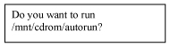
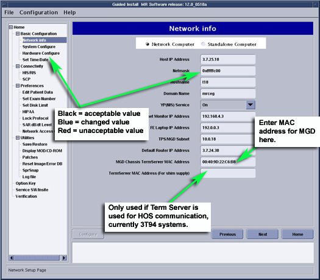
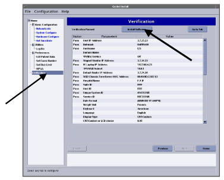
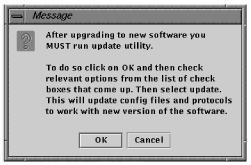
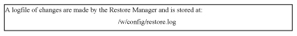
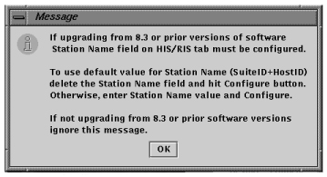

Operating Documentation
Direction 5133330-3, Rev# 14
Signa EXCITE HD 3.0T Service Methods
Module Version 3.0, Version Date 6/3/10
Operating Documentation |
| Required Persons | Preliminary Reqs | Procedure | Finalization |
|---|---|---|---|
| 1 | Not Applicable | Not Applicable | Not Applicable |
| Last Update | 06/10/2007 |
Insert Applications CD into the Host CD drive in the GOC. Do not use the CD drive on the SCSI tower.
Illustration 1 will appear
Illustration 1: Do You Want to Run Pop-Up

Click on [yes]
Illustration 2 appears as noted below
Illustration 2: Turn Off Power

Select [continue] with the software load. The system is now partitioning the hard drives.Illustration 3 will appear
Illustration 3: Reboot Warning
A pop up will appear with options to [continue], [halt] or [close]. Do not select anything, let the program run. After 2 minutes the system will reboot.
Eventually the Guided Install page will appear
Eventually a window will appear indicating improvements made from previous software version. Click [OK] to continue
A message box will appear concerning the guided Install process. A message appears as in Illustration 4. Select proper media for Guided Install, either MOD or CD/DVD
Illustration 4: Install Configuration Pop Up Screen

| ||||
| The last install GUI configuration can only be installed if it was previously saved using the [Save GI Configuration to MOD]. | ||||
Insert the SaveInfo MOD if a GUI configuration has been saved and then push the [OK] button to reinstall your last GUI install configuration values. (The normal SaveInfo files are not restored at this point in the software load. They will be restored later). You will verify the correct values restored by checking each tab in the next step.
| NOTE: | If you did not save GUI configurationor are performing load for the first time), Save GI Configuration, push the [Cancel] button to continue manually with the install |
The Guided Install menu has changed for 12x. See Illustration 5. If any parameters do not match the expected criteria, the left column will be red. If everything is acceptable, all values will be black. If the value is changed, it will be noted in blue. Select the Basic Configuration tab and verify that all values under Basic Configuration tab are configured properly, including Time/Date
Illustration 5: Guided Install- Configuration Screen

If failures are noted, click on the failure, then select Go to Tab for the proper tab
| NOTE: | If the GI Configuration was successfully restored from the MOD in Step 3 then it should not be necessary change any of the parameters in Guided Install. Just check them and confirm that there are no failures in the Verification Tab. If there are failures, then make the necessary changes as described in Step 5 and Step 6. |
| NOTE: | The Host IP address must be assigned and entered before assigning and entering the TPS/MGD Subnet. Make sure the first digits of the TPS/MGD subnet are different from the first digits of the Host IP address. If not, use the pull down arrow for the TPS/MGD subnet to select another address. Failure to make this change will result in the APPS load failing to boot. |
| NOTE: | It is not necessary that any one tab be filled out in any particular order. Just all required configuration tabs must be filled in or the install will not continue. The verification tab will list any formatting errors as well as current settings. SeeIllustration 6 for an example of a failure in the Verification tab in networking (in the example, the Host IP Address is an incorrect format) |
| ||||
| If you are loading software for the first time on a Linux PC, the initial boot-up will fail. You must manually enter the “term server” information into the Guided Install screen under the Network Info Screen. The information must be entered in the following format:Example is 20:2D:90:22:44 use colon's between two digits, letters are case sensitive. See Illustration 6 | ||||
On the System Configuration tab, be sure to select the proper model number for the LCD or CRT
Proceed to the Verification tab, Illustration 6. Once in the verifications tab look for any pass or fail status, the [Install Software] button will not be active if there are any failures. Failed entries will be due to missing entries, or entries not in the correct format. Go to the tab with the error and correct it, then push the [Install] button to open the Verification Tab again. If all entries pass verification at this point, push the [Install Software] button again to begin the MR Apps load. See Illustration 6. The verification popup will open. A GUI will appear indicating “Software Installation in progress” which indicates that the software is loading. The MR Apps load will take 5-10 minutes, depending on the machine being loaded.
Illustration 6: Guided Install- Verification

| NOTE: | If upgrading from LX do not change hardware configuration until after you have successfully converted your LX software options to Excite. The option conversion occurs during 1st restart INFO while loading software. |
Once the MR Apps load is done the pop up inIllustration 7 is displayed. Click on the [OK] button to close the pop up
Illustration 7: Guided Install- SW Done Screen

At this point the GUI will change from the Install phase. If a SaveInfo info MOD is not available, go to each tab in the Install GUI and fill in or update all system information manually. A help button is available on each tab, which will open a pop up box with information on the required data and its format for that page
| NOTE: | If doing a LX to Excite upgrade you must restore info at this time or your options will not be converted to Excite. |
A pop up will ask if you want to restore all files or selectively restore, see Illustration 8. Select [Restore Information], then select the proper media, either MOD or CD/DVD. Then select [Restore all files automatically]
Illustration 8: Restore Option Pop Up

| NOTE: | If restoration fails, the MOD will automatically eject the media. Exit instal and allow system to reboot. When the system is back up, reenter Guided Install and attempt to RestoreInfo again |
A “RestoreINFO in Progress” window will scroll filenames as they are being restored
When the RestoreINFO is finished a pop up will open telling the installer to run the update utility. See Illustration 9.
Illustration 9: Guided Install- Update Utility Message

Push the [OK] to continue. The Restore Manager menu opens (see Illustration 10)
Illustration 10: Guided Install- Restore Utility

Make sure the box labeled “All” at the top is selected so all items are restored. Click on [Update] button when update is finished Click [Quit] then [yes]
At this time a GUI might appear for selecting the proper monitor. If you have an LCD monitor select CRT, then select LCD. This is known problem for Excite II, it will be fixed in Excite IIA
Illustration 11: Log File

In response to the question, click [OK] to exit the tool. If everything updates successfully, click [Quit] to continue.
Select [OK]
Beginning with Signa 10.x coil parameters have changed. For upgrades from 8.x or 9.x a coil update will run to add the new parameters to the exciting coil definitions. The success of the update is dependant on recognition of coil names. If no discrepancies are found continue to Step 25. If any coils are not recognized during the update, the error message shown inIllustration 12 will pop up
Illustration 12: Coil Config Upgrade Status Message with Unknown Coils Found

If unknown coils are found, finish the software load then go to Unknown Coils Configuration Procedure Coil Configuration Updates for help in adding these unknown coils.
The following Message appears, (see Illustration 13) select [OK]
Illustration 13: 8.3 Upgrade Message

Use the cursor to select [File] and then [Quit] at the top left of the Install GUI. When the GUI shuts down, the system will reboot and all the changes made during the restore process will be set.
| NOTE: | It is necessary to shut down the 12.0 software before attempting to load the Restricted Service or Advanced Service CDs. These should not be loaded with Applications software running. Close guided install by clicking on [file] – [quit] and reboot the system. |
Quit Guided Install. The System will automatically reboot at this time. Log into the system as root, password is operator.
If applicable, reconnect the DASM
Select [yes] to start the Guided Install GUI
Insert the Service Software CD and click the Service SW/Insite option, located near the bottom of the Guided Install menu. Then select the Load Restricted Software option. The system will respond with a pop up as shown in Step . Read the proprietary statement and continue by clicking the “1,2,3” buttons in order and then click [OK].
Insert the your normal SaveInfo MOD or a new MOD into the drive if not already in the drive
At the top left corner of the Install GUI, select [File] then [Save GI Configuration to MOD] This will save the information that has been entered in all the edit fields in the GUI
Remove restricted CD from the system.
| NOTE: | With software release 12x, the Service Methods CD can be loaded onto the software platform. The load will take approximately 17 minutes to complete. |
Insert the Service Methods CD into the CD ROM drive in the PC. Click on [Install Service Documentation]. See Illustration 14.
Illustration 14: Loading Service Documents To The Scanner

A pop-up as shown inIllustration 15 will be displayed – click as appropriate.
Illustration 15: CD Load Question

After the installation of the CD contents, remove the CD form the system by going to the Service Desktop – home – bottom left “Unmount CD”
Perform the Term Server Reset Procedure by executing the following steps:
Remove power connector from Term Server.
Press and hold the small square button, labeled 'reset' next to power jack
Connect power to term server, while continuing to hold in reset button
Continue to hold reset button for 20 seconds
| NOTE: | If communication problems between Linux PC and Term Server are percieved, you can ping the Term Server |
Open Cshell
type cd /etc<enter>
type more hosts<enter>
Ping the ts1 address by typing ping X.X.X.7<enter> You should see proper communication. The X.X.X. is your TPS Subnet address
| NOTE: | The Term Server might need to be reset several times in order to establish communication with the Linux PC |
| NOTE: | The “save to MOD” process does not create a complete SaveInfo disk. It only creates a copy of the information already entered in the GUI tabs for later use to update the GUI tabs during a new install (SaveInfo uses the Save/Restore tab.) The <Save GI Configuration to MOD> and SaveInfo can be saved on the same MOD. A separate partition is built for each. |
| ||||
| If the system will not properly boot on the first try, the Term Server may need to be reset. Perform the Term Server reset procedure Step 37. | ||||
Exit the install GUI by selecting File then Quit from the top of the interface. If any error conditions still exists, you will be warned that no changes will be made. If no error conditions are found, the GUI will save user parameters
| NOTE: | For installing the software using the e-licensing , refer to 2397845 Signa Software Option Install with eLicense. |
Boot down Linux PC by “right clicking” on the mouse, and select [system restart]. This will properly configure the Term Server
You can now boot Applications software
VCR Interface Option
The VCR video software driver is installed as part of the Apps load. There is no need to install additional software for the VCR option
No finalization steps.